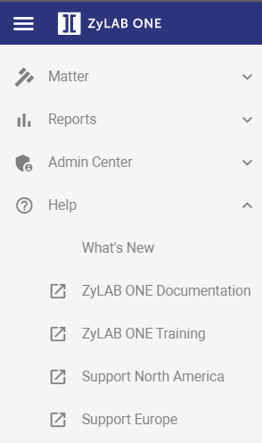

When you expand the Help option in the navigation tree, various options are shown:

The first option, What’s New, will lead you to a topic about all new additions to ZyLAB ONE SaaS. If you are interested in the development of the ZyLAB ONE eDiscovery software, you can keep up with it here. When you work in a SaaS environment, you will be able to use the newest updates as soon as they are available.
The second option, ZyLAB ONE Documentation, will lead you to the website https://docs.zylab.com. Here you will find manuals on the use of all ZyLAB products. This is an overview and extension of the context-sensitive help offered in the user interface.
The third option, ZyLAB ONE Training, will lead you to the website https://zylab.litmos.com. From this website, you can access the ZyLAB Training portal.